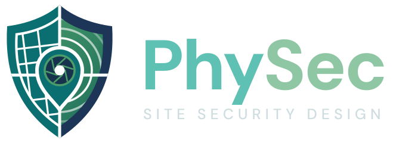
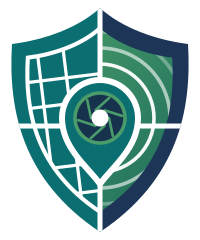
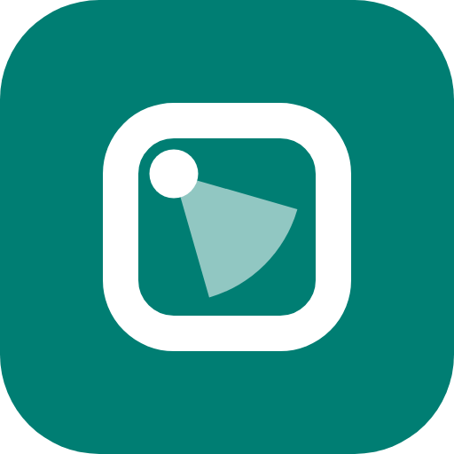
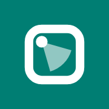

PhySec logo
Concept A, refined: a room outline with a camera in its corner and the camera's field of view shaded. Every image on this page is one of the files in this folder, so what you see is what ships. The lettering is DM Sans Bold converted to shapes, so it looks the same without the font installed.
Name and mark

In the app header, at the current size
Mark sizes

The small version has a heavier frame, a larger camera and a stronger field of view, so it holds together at 32 pixels and below.
Icons


square; iOS rounds it
Use
- Colours
- Teal
#007e73mark and ink#122626lettering on light backgrounds. Light teal#4fc3b2and#f2f6f4on dark. - One colour
physec-mark-mono.svgtakes the surrounding text colour, for print and single-colour uses.- Clear space
- Keep at least a quarter of the mark's height empty around the logo.
- Minimum size
- Standard mark from 32 pixels up; below that, use the small version. Name and mark from 24 pixels tall.
- Favicon
favicon.svgswitches to light teal in a dark browser theme;favicon.icocovers browsers without SVG favicons.